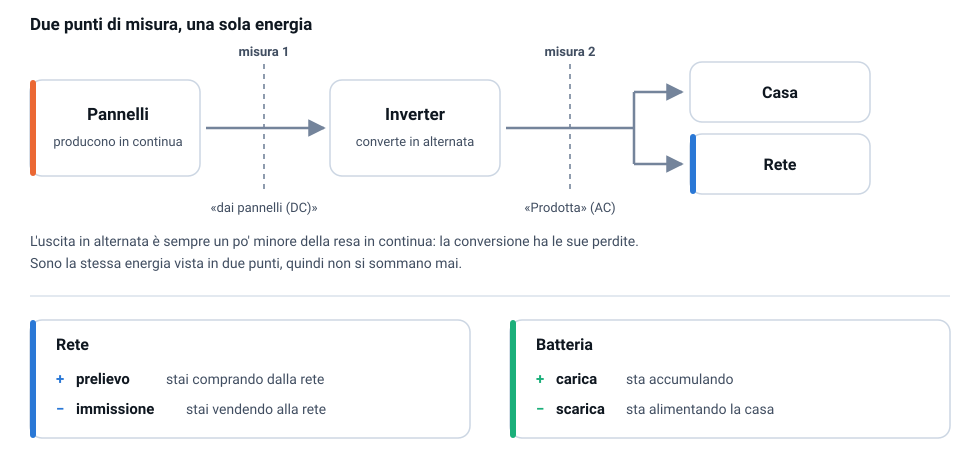
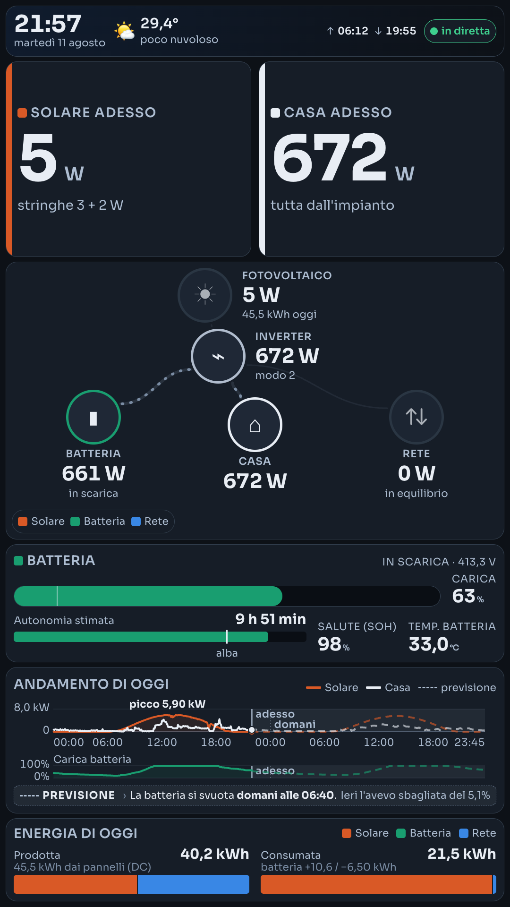
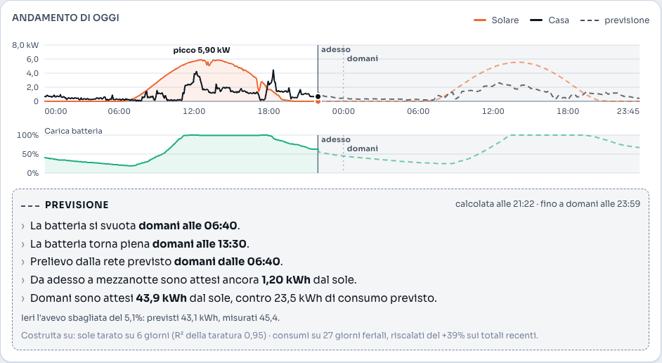
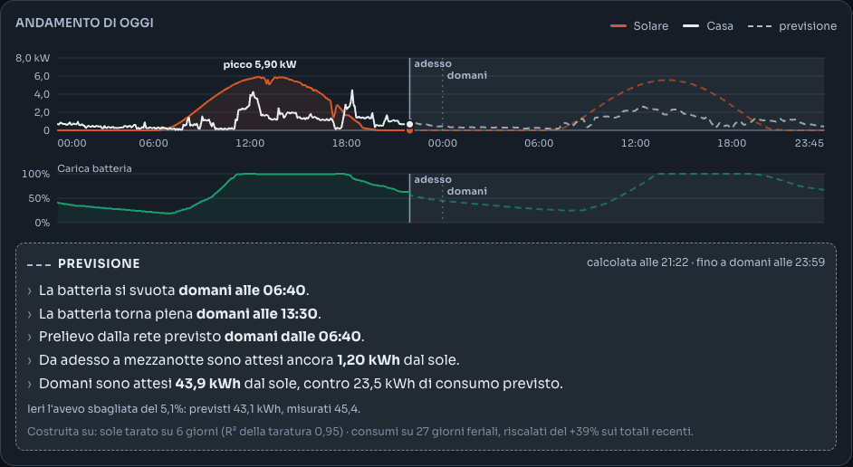
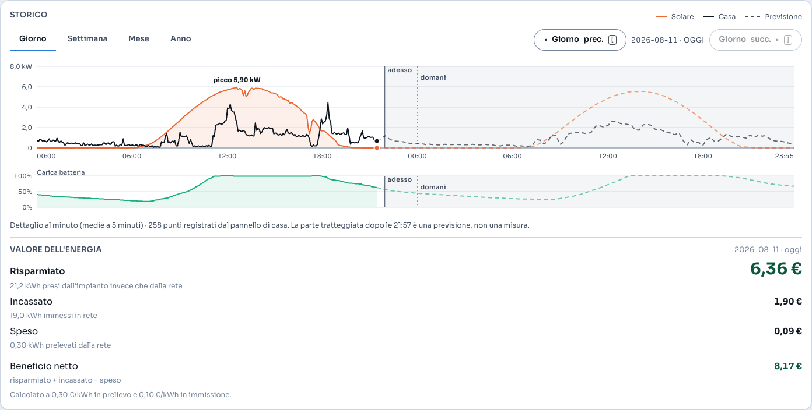
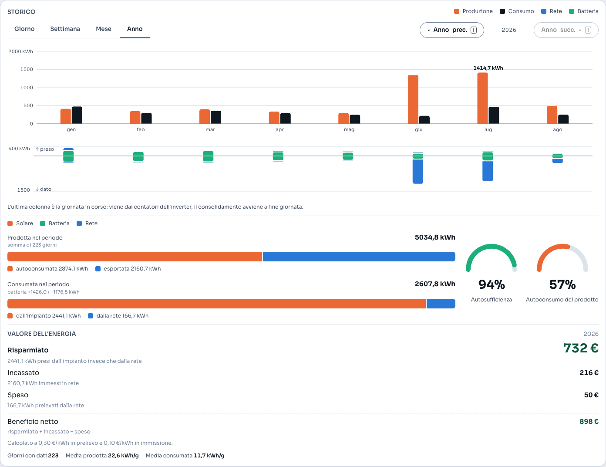
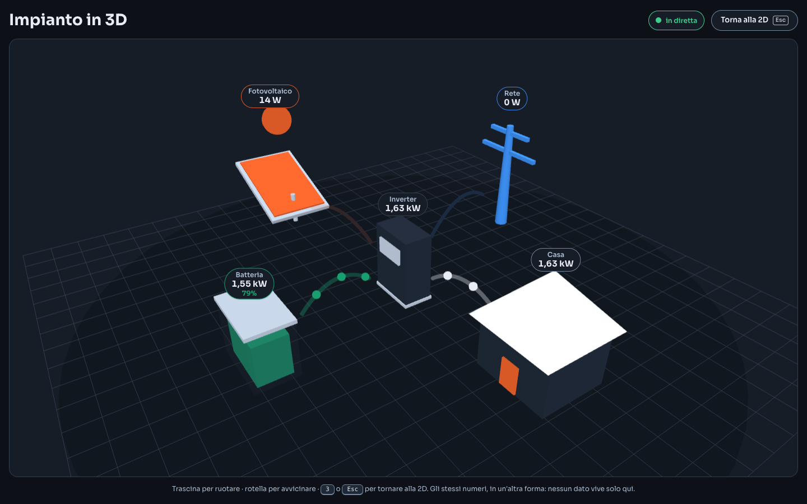

Guida operativa
Come si apre EnergyFlow, come si legge quello che mostra, come ci si accorge quando qualcosa non va, e cosa fare quando succede.
1. Cos'è e a cosa serve
EnergyFlow legge l'inverter fotovoltaico di casa direttamente, sulla rete locale, e mostra su uno schermo che cosa sta succedendo all'energia in questo momento: quanto producono i pannelli, quanto consuma la casa, cosa entra e cosa esce dalla batteria, cosa si scambia con la rete elettrica.
Serve a rispondere a colpo d'occhio a una domanda sola — adesso sto usando il mio sole o sto comprando corrente? — senza aprire il portale del costruttore, senza aspettare il cloud e senza che i dati di casa escano di casa.
Alle stesse domande risponde anche in avanti e all'indietro: una previsione dice come andranno sole, consumo e batteria fino a fine giornata di domani, e il valore in euro dice quanto vale, in denaro, l'energia di un giorno, di un mese o di un anno.

2. Come si apre
Dal pannello a muro
Non c'è niente da fare. Il monitor da 32" verticale in corridoio è pilotato dal Raspberry Pi: quando il Pi si accende, parte da solo il browser a schermo intero sulla dashboard. Non ha tastiera né mouse, non si tocca e non si aggiorna a mano — è un cartello che si aggiorna ogni cinque secondi. Se lo schermo è nero o bianco, vai a «Se qualcosa si rompe».
Da telefono e da Mac
La stessa pagina si apre da qualunque dispositivo iscritto al tailnet di casa, all'indirizzo:
https://<rpi-host>.<tailnet>.ts.net/Funziona sia dentro casa sia fuori, purché il client Tailscale sul telefono o sul Mac sia acceso e collegato. Non c'è nessuna password da digitare: la pagina si autorizza da sola al primo caricamento.
Perché non c'è un indirizzo di rete locale. Il server ascolta solo sul Raspberry stesso, non sulla rete di casa. Esporlo sul wifi vorrebbe dire rendere leggibile la telemetria di casa a chiunque sia connesso — ospiti, televisori, lampadine intelligenti, chiunque conosca la password del wifi. Tailscale ottiene lo stesso risultato senza aprire nulla a nessuno, quindi lo si usa anche quando si è in salotto.
Dal Mac, senza aprire il browser
Sul Mac ci sono anche tre modi di tenere d'occhio i numeri senza una scheda aperta:
- EnergyBar — un'icona nella barra dei menu con rete, casa, solare e batteria.
- Widget di sistema — nel Centro Notifiche o sulla Scrivania.
- Übersicht — una barra fissa sullo sfondo della Scrivania.
Tutti e tre leggono indirizzo e token da due file nella cartella di configurazione del Mac:
~/.config/energyflow/url https://<rpi-host>.<tailnet>.ts.net
~/.config/energyflow/token il token del serverCon quei due file i widget vanno da qualunque rete, purché Tailscale sia acceso — come la pagina nel browser. Come si scrivono: «Servizio, log e token».
Se il file url manca, i widget ripiegano su 127.0.0.1:8003, cioè
cercano il server sul Mac: in quel caso serve un tunnel verso il Raspberry, aperto una
volta e lasciato lì.
ssh -N -L 8003:127.0.0.1:8003 <rpi-host>3. Come si legge la dashboard

La barra in alto
Ora e data, meteo del posto, orario di alba e tramonto, e a destra la pastiglia di freschezza: è l'unico elemento che distingue «dati di adesso» da «numeri congelati sullo schermo». Quando è verde e dice in diretta quello che vedi è successo meno di quindici secondi fa.
Solare adesso
La potenza che i pannelli stanno producendo in questo istante, in W o kW. Sotto, in
piccolo, la ripartizione fra le due stringhe (stringhe 2,38 + 1,80 kW): se una delle
due è ferma a zero in pieno sole, c'è qualcosa da guardare sul tetto.
Casa adesso
Quanto sta assorbendo la casa in questo istante. La frase sotto risponde alla domanda che uno si fa davvero: lo sto pagando? — «tutta dall'impianto», «coperta al 60% dall'impianto», «tutta dalla rete».
Il diagramma di flusso
Cinque nodi — Fotovoltaico, Inverter, Batteria, Casa, Rete — collegati da archi. Quello che conta è il verso: i puntini corrono lungo l'arco nella direzione in cui l'energia sta andando. Un nodo a riposo (sotto 20 W) resta al suo posto ma si smorza, così l'occhio non lo cerca.
- Batteria → «in carica», «in scarica» o «a riposo».
- Rete → «preleva dalla rete», «immette in rete» o «in equilibrio».
- Inverter → la potenza che passa dall'apparecchio, e il modo di funzionamento.
I numeri sui nodi sono sempre senza segno: la direzione la dicono la frase e i puntini, non un meno davanti al numero.
Batteria
- Carica — la percentuale. La tacca sulla barra è la soglia minima configurata: sotto quella l'inverter non scende.
- Autonomia stimata — per quanto la batteria regge il consumo attuale. Ha senso solo mentre si scarica; in carica dice «in carica». Il marcatore alba sulla barra risponde alla domanda vera: ci arrivo, a domattina? Se il riempimento supera il marcatore, sì.
- Salute (SOH) — quanta capacità le resta rispetto a quando era nuova. Cala di pochissimo all'anno; se scendesse di colpo, sarebbe una notizia.
- Temperatura — della batteria e (su schermo grande) dell'inverter.
Andamento di oggi
Due curve, solare e casa, con sotto la striscia della carica batteria sullo stesso asse dei tempi. La curva arriva dal Raspberry, non dal browser: sopravvive al riavvio del Pi e al ricaricamento della pagina, quindi il pannello si accende con la giornata già disegnata invece di ripartire da zero.
Ogni punto è un minuto, ed è la media dei dodici campioni letti in quel minuto — non l'ultimo valore, che sarebbe un colpo di fortuna. Se il server non risponde, il browser fa da rete di sicurezza con la curva che ha accumulato lui: meglio una curva parziale di una card vuota.
Il grafico non finisce più a «adesso»: prosegue, tratteggiato, fino a fine giornata di domani. Quella parte è una previsione e si riconosce a colpo d'occhio — vedi il capitolo dedicato.
Storico
Sotto l'andamento c'è la sezione Storico, che guarda indietro su quattro periodi: Giorno, Settimana, Mese, Anno. Si sceglie con le linguette in alto a sinistra; i due pulsanti a destra («◂ prec.» e «succ. ▸») scorrono avanti e indietro nel periodo scelto, e quello in avanti si spegne quando si è arrivati a oggi invece di restare cliccabile senza portare da nessuna parte.
Si apre sulla settimana, non sul giorno: la giornata di oggi è già disegnata due centimetri più su, mentre l'archivio lungo — il motivo per cui questa sezione esiste — non si vedrebbe finché qualcuno non clicca.
| Periodo | Cosa mostra | Fin dove arriva |
|---|---|---|
| Giorno | La curva al minuto di quel giorno, con la carica della batteria sotto, come in «Andamento di oggi» | Gli ultimi 90 giorni: oltre, del giorno resta solo il riepilogo |
| Settimana Mese Anno |
Una colonna per giorno — per mese, sull'anno: prodotto e consumato, con sotto quanto si è preso e dato alla rete e i flussi di batteria | 230 giorni, importati dal portale del costruttore e uniti a quelli registrati in casa |
La carica della batteria compare solo nella vista Giorno, e solo dove il dato al minuto esiste davvero. Non è un vezzo: senza il livello di carica, guardando un giorno passato non si capisce perché a una certa ora la casa abbia preso dalla rete invece che dal sole. In settimana, mese e anno non compare perché non esiste una «carica del periodo».
Un giorno si può anche aprire direttamente, e il link si può salvare o mandare a qualcuno:
https://<rpi-host>.<tailnet>.ts.net/?day=2026-08-08Da tastiera: p cicla il periodo, [ e ] scorrono avanti e indietro.
Un giorno senza dati non viene disegnato come una linea piatta a zero — sarebbe indistinguibile da una casa senza consumi. Dice invece che non c'è, e perché: «o il sistema era spento, o il giorno è più vecchio della retention».
Cosa è esatto e cosa è ricostruito. Nel riepilogo giornaliero, la sola produzione fotovoltaica viene dal contatore dell'inverter ed è esatta. Prelievo, immissione, carica e scarica sono invece ricostruiti integrando le medie al minuto, perché a mezzanotte i contatori giornalieri dell'apparecchio si azzerano e quel numero non si può più chiedere. Sono buoni per confrontare due giorni fra loro, non per contestare una bolletta.
Energia di oggi
Due barre, e sono due totali veri, non una somma di cose diverse.
- Prodotta — l'energia uscita dall'inverter da mezzanotte, divisa in «autoconsumata» ed «esportata». La nota sotto riporta la resa dei pannelli in continua.
- Consumata — quella entrata in casa, divisa in «dall'impianto» e «dalla rete». La nota riporta a parte quanto è entrato e uscito dalla batteria: sono flussi interni, non un terzo pezzo da impilare accanto agli altri due.
Indici di oggi
- Autosufficienza — quanta parte del consumo di oggi non è arrivata dalla rete.
- Autoconsumo del prodotto — quanta parte di ciò che hai prodotto è rimasta in casa invece di essere venduta.
DC e AC: due numeri diversi per lo stesso sole
È il punto in cui tutti si confondono, ed è normale: sono due misure della stessa energia prese in due punti diversi dell'impianto.
- Resa dei pannelli (DC) — quanto hanno prodotto i pannelli in corrente continua, prima dell'inverter.
- Prodotta (AC) — quanto è uscito dall'inverter in corrente alternata, pronto per la casa o per la rete.
L'AC è sempre un po' più basso del DC, perché la conversione ha le sue perdite. Non si sommano mai: sarebbe contare due volte lo stesso sole.

La convenzione dei segni
Sullo schermo i numeri sono senza segno e accompagnati da una frase, quindi questa regola serve soprattutto a chi guarda i dati grezzi (il pannello registri, i widget, l'API):
| Valore | Positivo | Negativo |
|---|---|---|
| Rete | prelievo — stai comprando | immissione — stai vendendo |
| Batteria | carica — sta accumulando | scarica — sta alimentando la casa |
Le stesse cose sul pannello a muro e sul telefono


4. La previsione: cosa succederà
Il grafico dell'andamento non si ferma ad adesso: prosegue fino a fine giornata di domani, e sotto le curve un riquadro dice a parole le stesse cose. Non risponde a «quanto ho prodotto», ma alla domanda che uno si fa la sera: la batteria mi porta fino a domattina, o alle sei sto già comprando corrente?
Come si riconosce a colpo d'occhio
È la cosa più importante di questo capitolo, perché misura e previsione stanno nello stesso grafico e non devono potersi confondere. La parte prevista è diversa in tre modi contemporaneamente:
- è tratteggiata, mentre il misurato è a linea piena;
- è più chiara, e non ha l'area colorata sotto la curva;
- comincia dopo una riga verticale con la scritta «adesso» — a destra di quella riga niente è ancora successo. Una seconda riga più tenue segna la mezzanotte, cioè dove comincia «domani».
La legenda in alto al riquadro aggiunge la voce previsione con lo stesso tratteggio, e compare solo quando una previsione c'è davvero.


Cosa dice il riquadro
Le frasi sono ordinate per importanza, e ci sono solo quelle che il calcolo sa davvero dire:
- Quando la batteria si svuota — l'ora, non «fra 9 ore»: un'ora si confronta con la sveglia, un intervallo va sottratto a mente.
- Quando torna piena.
- Da che ora si comincia a prelevare dalla rete, cioè da quando si paga.
- Quanto sole resta da qui a mezzanotte, e quando è finito lo dice invece di mostrare uno zero.
- Quanto sole è atteso domani, accanto al consumo previsto: da solo, «43,9 kWh» non dice se domani sarà una giornata di surplus o di prelievo.
In alto a destra c'è a che ora è stata calcolata e fin dove arriva. Il ricalcolo è ogni quarto d'ora: se l'orario è vecchio di ore, la previsione è ferma e va guardata con sospetto (o è sparita del tutto — vedi il troubleshooting).
Quanto ci si può fidare
La previsione si dà i voti da sola. Ogni mattina mette da parte quello che ha previsto, e il giorno dopo lo confronta con quello che è successo davvero: il risultato è la riga «Ieri l'avevo sbagliata del …%», che compare anche quando la cifra è brutta. Finché quel confronto non c'è ancora, al suo posto si legge «Precisione non ancora misurata»: uno spazio bianco lascerebbe credere che sia stata verificata e vada bene.
Non esiste una «precisione dichiarata» di questa previsione, e non va cercata. L'ultima riga del riquadro dice su cosa è costruita — per esempio «sole tarato su 6 giorni (R² della taratura 0,95)» — e quel numero non è una percentuale di accuratezza: misura quanto bene la relazione fra irraggiamento e produzione spiega i giorni già passati, non quanto la previsione ci prenderà domani. Quanto ci prende lo dice soltanto la pagella di ieri. Chiunque scriva «precisione 95%» sta leggendo male quella riga.
Da dove escono i numeri
| Pezzo | Come si ottiene |
|---|---|
| Il sole | L'irraggiamento previsto dal servizio meteo, moltiplicato per un coefficiente imparato da questo impianto confrontando giorni di sole veri con produzione vera. Il valore di targa non saprebbe nulla di orientamento, ombre e pannelli sporchi; i dati dell'impianto sì. |
| Il consumo | Il profilo mediano dei giorni comparabili, quarto d'ora per quarto d'ora, con feriali e fine settimana tenuti separati — in una casa sono due giornate diverse. Della mediana si tiene la forma e si riscala il livello sui totali recenti, perché i consumi derivano con le stagioni. |
| La batteria | Non si prevede: si simula. Si parte dalla carica di adesso e si integra sole − consumo di quarto d'ora in quarto d'ora, tenendo conto della capacità, della riserva minima e del rendimento di carica e scarica. Le ore che compaiono nelle frasi escono da questa simulazione, non da una stima a occhio. |
Quando la previsione avverte di non fidarsi
Sopra le frasi può comparire una banda ambra che comincia con «Previsione poco affidabile:» e dice il motivo. I casi che si vedono davvero:
- meteo non raggiungibile o vecchio di ore;
- poco storico — con due giorni di dati la taratura del sole è una retta su quattro punti;
- relazione sole‑produzione instabile, cioè la taratura non ha retto;
- fuso orario del Raspberry diverso da quello del meteo. È il guasto peggiore di tutti proprio perché non rompe niente: la previsione continua a funzionare, spostata di un'ora, con il picco solare messo quando il sole non c'è.
Senza meteo la previsione non dice che non produrrai niente — sarebbe la bugia più grossa possibile: ripiega sulla mediana di quanto questo impianto ha prodotto alla stessa ora nei sette giorni scorsi, e lo dichiara nella banda.
Sul pannello a muro c'è, ma ridotta a una riga. Restano il tratteggio nel grafico e la prima frase — quella della batteria, la domanda per cui la previsione sta su un muro — più il giudizio di ieri. Il dettaglio tecnico non ha pubblico a tre metri di distanza, e mezza frase troncata sarebbe peggio di nessuna frase.
La previsione compare solo su oggi. Se nello storico si apre un giorno passato, il tratteggio non c'è: accanto alla misura di un 15 marzo, una previsione sarebbe solo un modo di confondere le due cose.
5. Quanto vale, in euro
Sotto le barre dell'energia — e nello storico, sotto il periodo che si sta guardando — c'è il riquadro Valore dell'energia: gli stessi kWh già mostrati sopra, moltiplicati per il prezzo della corrente.
Prima va configurato: senza tariffa non compare nulla
I prezzi non li indovina nessuno. Vanno scritti in config.json, sul Raspberry:
"tariff": {
"currency": "EUR",
"import_eur_kwh": 0.00,
"export_eur_kwh": 0.00
}import_eur_kwh è quanto paghi un kWh preso dalla rete;
export_eur_kwh è quanto ti danno per un kWh immesso. Dopo la
modifica: sudo systemctl restart energyflow, poi ricarica la pagina.
Usa il prezzo pieno della bolletta, non la sola componente energia. Quello che conta è quanto costa davvero un kWh in più: energia più oneri di sistema, trasporto e imposte, cioè il totale della bolletta diviso i kWh consumati. Con la sola componente energia il risparmio esce sottostimato di parecchio — e il risparmio è il numero per cui l'impianto esiste.
Se il blocco tariff non c'è, il riquadro non compare affatto — non
mostra zeri, trattini o un prezzo medio nazionale «tanto per». Un importo plausibile e falso è
peggio di un importo assente, perché nessuno va a verificarlo, mentre un riquadro che manca si
nota subito. Se hai configurato solo il prezzo di prelievo, compaiono risparmio e spesa e
manca il totale: sarebbe una somma a cui manca un addendo.
Le tre voci, e perché quella grossa è la prima
| Voce | Cos'è |
|---|---|
| Risparmiato | L'energia che la casa ha preso dall'impianto invece che dalla rete, al prezzo a cui l'avresti pagata. Non compare su nessuna bolletta — è denaro che non è uscito — ed è quasi sempre la voce più grossa delle tre. Per questo sta in cima e in grande. |
| Incassato | I kWh immessi in rete, al prezzo di ritiro. Di norma molto più basso di quello di acquisto: è il motivo per cui conviene consumare quando c'è il sole invece di vendere. |
| Speso | I kWh prelevati dalla rete, al prezzo di acquisto. È l'unico dei tre che si legge anche altrove, e infatti sta per ultimo. |
| Beneficio netto | risparmiato + incassato − speso, scritto sotto la riga così com'è. |
Ogni voce porta sotto i kWh da cui viene, e in fondo al riquadro c'è la riga «Calcolato a … €/kWh in prelievo e … €/kWh in immissione»: sono la sola cosa che rende controllabili i quattro numeri sopra. Se un giorno gli importi sembrano sbagliati, la prima cosa da guardare è quella riga — di solito la tariffa in configurazione è vecchia.


Sul pannello a muro gli importi non ci sono, ed è una rinuncia decisa: in quella fascia dello schermo lo spazio è già tutto speso, e una riga in più verrebbe tagliata a metà. Un numero tagliato è peggio di un numero assente. Fra previsione ed euro, sul muro sta la previsione — dice una cosa che lì non c'è da nessun'altra parte, mentre gli euro sono i kWh di sopra moltiplicati per un prezzo. Il valore in denaro resta intero nella vista da computer e da telefono.
6. Capire se qualcosa non va
La dashboard non finge mai. Se i numeri non sono attendibili lo dice, e lo dice in modo diverso a seconda di cosa è rotto: sono guasti diversi e mandano a cercare in posti diversi.
| Cosa vedi | Cosa vuol dire | Cosa fare |
|---|---|---|
| in diretta | Tutto a posto: l'ultimo dato ha meno di 15 secondi. | Niente. |
| aggiornati 20 s fa | Un ritardo passeggero, fra 15 e 60 secondi. Compare anche un banner ambra. | Aspetta. Se torna verde da solo entro un minuto non è successo niente. |
| fermi da 4 min | Il Raspberry risponde, ma i numeri sono congelati: è l'inverter che non risponde più, non il server. I valori restano visibili ma sbiaditi. | Vedi «I numeri sono fermi». |
| nessun dato + BACKEND OFFLINE | Il Raspberry non risponde più da oltre un minuto. I numeri spariscono: lasciarli sarebbe peggio, continuerebbero a sembrare veri. | Vedi «BACKEND OFFLINE». |
| Banner rosso con un testo tecnico | L'ultimo errore riportato dal lettore, per esempio
timeout Modbus sul registro 80. |
È l'indizio da riportare nei log. Di solito accompagna uno dei due casi sopra. |
| Un numero barrato | Il valore è arrivato, ma il sistema lo giudica non attendibile: fuori dal campo fisicamente possibile, o un contatore che è andato all'indietro. | Guardalo, non fidartene. Vedi «Un numero è barrato». |


Perché due stati e non uno. Un server vivo che serve un dato fermo da quattro minuti non è «offline»: risponde benissimo, è il lettore dell'inverter che si è piantato. Chiamarli allo stesso modo manderebbe a cercare il guasto nel posto sbagliato.
7. Scorciatoie da tastiera
Servono sulla vista da computer e per la manutenzione (una tastiera attaccata al Raspberry). Il pannello a muro non ha tastiera. Premi ? in qualsiasi momento per rivederle a schermo.
| Tasto | Cosa fa |
|---|---|
| ? | Apre e chiude l'aiuto con l'elenco delle scorciatoie |
| r | Aggiorna i dati adesso, senza aspettare il ciclo |
| a | Aggiornamento automatico acceso / spento |
| t | Tema: automatico → chiaro → scuro → automatico |
| k | Passa fra modalità kiosk (numeri giganti) e compatta |
| 1 | Vai alla vista del flusso |
| 2 | Vai allo storico |
| p | Storico: giorno → settimana → mese → anno |
| [ ] | Storico: periodo precedente e successivo |
| 3 | Apre e chiude la vista 3D dell'impianto |
| d | Mostra o nasconde il pannello dei registri |
| f | Schermo intero |
| Esc | Chiude l'aiuto |
In automatico il tema segue alba e tramonto del posto: chiaro di giorno, scuro di notte. La scelta fatta con t resta memorizzata sul dispositivo finché non si ritorna su «automatico».
La vista 3D si apre col tasto 3 o col pulsante «3D» fra i controlli, e si chiude allo stesso modo (o con Esc). È l'unica parte pesante del progetto, e per questo si carica solo quando la si apre: il pannello a muro, dove nessuno la guarda, non paga il costo di una libreria grafica che non userà mai. Quando si esce, il disegno si ferma davvero — e si ferma anche quando la finestra passa in secondo piano. I numeri che mostra sono gli stessi della vista 2D, non un calcolo a parte. Sul pannello a muro non c'è: lì non ci sono né mouse né tastiera per girare intorno alla scena, e un contesto grafico acceso ventiquattro ore su ventiquattro si pagherebbe senza restituire niente.

8. Servizio, log e token
Avviare e riavviare
Sul Raspberry EnergyFlow gira come servizio di sistema e riparte da solo a ogni avvio e dopo ogni errore.
sudo systemctl status energyflow # come sta
sudo systemctl restart energyflow # riavvia
journalctl -u energyflow -f # guarda cosa dice, in direttaA mano, per una prova (dalla cartella del progetto):
python3 invert.py --serve # porta 8003, solo loopback
python3 invert.py --serve --debug # + dump dei registri a ogni letturaLa porta è una sola: 8003. Se è occupata il server non parte e lo dice, invece di spostarsi silenziosamente su un'altra: un pannello che punta alla porta sbagliata resta bianco senza spiegazioni.
Il pannello a muro
# riavvia la sessione grafica (il servizio dati resta su)
sudo systemctl restart lightdm
# ruota il monitor senza riavviare
XDG_RUNTIME_DIR=/run/user/1000 WAYLAND_DISPLAY=wayland-0 \
wlr-randr --output HDMI-A-1 --transform 270Dove sono i log
Un file al giorno, nella cartella log/ del progetto, accanto al SODE:
log/2026-08-09.txtDentro ci sono le letture, i tempi in millisecondi, gli errori del lettore Modbus e anche i messaggi del browser, che la pagina rimanda al server: così si può capire cosa è successo sul pannello a muro senza avere il pannello davanti.
Lo storico su disco
Accanto ai log del giorno, in log/energy/, ci sono i dati che tengono in piedi la
sezione Storico:
log/energy/2026-08-09.csv dettaglio al minuto, tenuto 90 giorni
log/energy/daily.csv un rigo per giorno, non si cancella mai
log/forecast/2026-08-09.json la previsione salvata quel mattino, per la pagella- Una scrittura al minuto, non una a ogni lettura: dodici volte meno scritture sulla microSD, che è la parte del Raspberry che si consuma per prima.
- Quanto occupa, misurato e non stimato: 42 kB per una giornata piena, 3,69 MB quando la retention è al massimo.
- Il consolidamento del giorno avviene alle 00:05. Se a quell'ora il Pi era spento, il giorno viene consolidato appena si riaccende invece di andare perso.
- Ogni cancellazione dovuta alla retention finisce nel log del giorno: i file non spariscono in silenzio.
- I giorni più vecchi dei 90 restano nello storico come riepilogo: sono i 230 giorni che si vedono nelle viste Settimana, Mese e Anno, importati una volta dal portale del costruttore e da lì in poi aggiornati in casa.
Per spegnere del tutto lo storico, in config.json:
"history": { "enabled": false }Con lo storico spento la sezione Storico non compare affatto — vedi il troubleshooting.
Lo stato di salute
curl -s http://localhost:8003/healthRisponde 200 con "status": "ok" se il lettore gira e i valori stanno nel
campo del possibile; 503 con "status": "degraded" e l'elenco dei motivi
se no. È una sonda vera, non un «il processo è vivo».
Il token
Nel browser non serve fare niente: la pagina riceve il token da sola al primo caricamento. Serve invece ai widget del Mac e a qualunque richiesta fatta a mano.
# sul Raspberry: leggerlo (lo genera al primo avvio se manca)
python3 invert.py --print-token
# sul Mac: due file, l'indirizzo e il token
mkdir -p ~/.config/energyflow
echo "https://<rpi-host>.<tailnet>.ts.net" > ~/.config/energyflow/url
ssh <rpi-host> "cd EnergyFlow && python3 invert.py --print-token" > ~/.config/energyflow/token
chmod 600 ~/.config/energyflow/tokenIl token vive nel file .env del progetto sul Raspberry, con permessi 600,
e non è nel repository. Se lo si rigenera, i widget vanno riconfigurati.
Il file url è la ragione per cui i widget funzionano senza tunnel: senza, cercano il
server sul Mac stesso (127.0.0.1:8003), che è il vecchio comportamento. In
alternativa ai due file valgono le variabili d'ambiente ENERGYFLOW_URL e
ENERGYFLOW_TOKEN.
Verificare che i numeri siano quelli giusti
python3 invert.py --validateControlla dodici invarianti fisiche sui dati veri — per esempio che l'energia prodotta oggi sia compatibile con la potenza istantanea integrata nel tempo, o che i contatori totali non vadano all'indietro. È il controllo che dice se la mappa dei registri sta ancora leggendo le cose giuste.
# registrare qualche minuto di dati e ricontrollarli con calma
python3 invert.py --capture giornata.json --duration 300 --interval 5
python3 invert.py --validate --from giornata.json9. Se qualcosa si rompe
Il pannello a muro è bianco, nero o mostra un errore del browser
In ordine, dal più probabile:
- Il servizio dati non è su →
sudo systemctl status energyflow. Se è fermo,sudo systemctl restart energyflowe guardajournalctl -u energyflow -n 50. - Il servizio c'è ma il browser non è partito →
sudo systemctl restart lightdmriavvia la sessione grafica; il servizio dati non viene toccato. - Il browser si è fermato su una richiesta di password del portachiavi. Succede se manca
l'opzione
--password-store=basicnell'avvio automatico: senza, chiede «Choose password for new keyring» e la pagina non si apre mai. - Lo schermo è in standby o il cavo si è mosso. Banale, e capita.
I numeri sono fermi — «fermi da N min»
Il Raspberry sta rispondendo: quello che non risponde è l'inverter. Le cause abituali:
- L'inverter ha cambiato indirizzo. È la causa più frequente, e il sistema se
ne difende da solo: dopo cinque letture fallite (circa 40 secondi) cerca l'inverter su tutta
la rete di casa, lo riconosce dalla firma dei suoi registri per non scambiarlo con un altro
apparecchio, e riprende. In genere non serve fare niente e i numeri tornano da soli.
La soluzione definitiva, però, è un'altra: riservare l'indirizzo dell'inverter sul router (DHCP reservation), così non cambia più. Finché non la si fa, il problema si ripresenta a ogni rinnovo del contratto di rete. - L'inverter è spento o si sta riavviando. Di notte alcuni modelli riducono l'attività: qualche timeout isolato non è un guasto.
- Wi-Fi o powerline instabili fra inverter e router. Nei log si vedono timeout ripetuti sempre sugli stessi registri.
Cosa guardare: journalctl -u energyflow -n 100 e le righe con Poll error
o Discovery nel file del giorno in log/.
BACKEND OFFLINE
Il server non risponde più a chi guarda la pagina. Dal Raspberry:
sudo systemctl restart energyflow
curl -s http://localhost:8003/healthSe il servizio non riparte, il messaggio di errore nei log dice quasi sempre perché. I due casi ricorrenti sono la porta 8003 già occupata da un altro processo (il server lo scrive nel log e si ferma di proposito) e la scheda SD piena o passata in sola lettura.
Se il pannello a muro va e invece il telefono no, il problema non è il server ma il collegamento: controlla che Tailscale sia connesso sul telefono.
Un numero è barrato
Il sistema ha ricevuto quel valore ma lo considera non attendibile: sta fuori dal campo fisicamente possibile (una tensione di batteria a quattro cifre, per esempio) oppure è un contatore che è andato all'indietro.
Non è un guasto della dashboard, è la dashboard che fa il suo lavoro: preferisce segnalare un dubbio che mostrare un numero pulito e falso.
curl -s http://localhost:8003/health # elenca i campi sospetti e gli invarianti falliti
python3 invert.py --validate # controllo completo sui dati veriSe il campo resta sospetto a lungo, la mappa dei registri va rivista per quel campo: è esattamente il segnale per cui esiste.
Il meteo dice «non disponibile»
Il meteo lo chiede il Raspberry, non il browser, e lo tiene in cache per un quarto d'ora. Se manca:
- mancano le coordinate in
config.json(sezionelocation); - il Raspberry non ha connessione a internet in quel momento.
Non è un guasto grave: senza meteo il resto della dashboard continua a funzionare, ma il tema automatico giorno/notte e il marcatore dell'alba perdono il loro riferimento.
I widget del Mac non si aggiornano
Nell'ordine:
- Manca l'indirizzo. Senza
~/.config/energyflow/urli widget cercano il server sul Mac stesso e non lo trovano. Scrivilo (vedi sopra), oppure riapri il tunnelssh -N -L 8003:127.0.0.1:8003 <rpi-host>. - Tailscale è spento sul Mac: con l'indirizzo del tailnet, i widget dipendono da quello esattamente come il browser.
- Manca o è scaduto il token. Il file
~/.config/energyflow/tokendeve contenere il token corrente; se il server ne ha generato uno nuovo, va riscritto (vedi sopra). Senza, il server risponde401e il widget resta vuoto invece di fingere. - Verifica a mano che il giro funzioni:
curl -s -H "Authorization: Bearer $(cat ~/.config/energyflow/token)" \ "$(cat ~/.config/energyflow/url)/data" | head -c 200
La previsione non c'è, o è ferma a ore fa
Il riquadro «Previsione» compare solo quando c'è qualcosa di vero da dire. Sparisce, di proposito, in questi casi:
- Stai guardando un giorno passato nello storico. È voluto: su un giorno già andato una previsione non significa niente.
- Non restano abbastanza punti nel futuro: la previsione è scaduta — il
ricalcolo dovrebbe girare ogni quarto d'ora e non gira. Guarda il servizio
(
journalctl -u energyflow -n 100) e cerca le righe della previsione. - La previsione non è mai stata calcolata: succede sul primo avvio, e finché non c'è abbastanza storico da tarare il sole. Nel frattempo la banda ambra lo dice.
Se invece c'è ma la banda ambra avverte, il motivo è scritto lì: meteo irraggiungibile, poco
storico, taratura instabile, o fuso orario del Raspberry diverso da quello del meteo.
L'ultimo va corretto sul sistema (timedatectl) e non nell'applicazione: con l'ora
sbagliata la previsione continua a funzionare, spostata, ed è il modo peggiore di sbagliare.
curl -s -H "Authorization: Bearer $(python3 invert.py --print-token)" \
http://localhost:8003/api/forecast | head -c 400
python3 invert.py --forecast-backtest 5 # riprova la previsione sui 5 giorni scorsiNon vedo nessun importo in euro
È il comportamento voluto quando in config.json manca il blocco
tariff: senza prezzi la dashboard non mostra importi invece di inventarne.
Aggiungilo e riavvia il servizio — vedi «Quanto vale, in euro».
Se gli importi ci sono ma sembrano sbagliati, guarda la riga in fondo al riquadro («Calcolato a … €/kWh»): dice i prezzi usati davvero, ed è quasi sempre una tariffa rimasta vecchia in configurazione.
Sul pannello a muro gli importi non compaiono mai, tariffa o non tariffa: non è un guasto, è la scelta spiegata in fondo a quel capitolo.
Il grafico dello storico è vuoto (o la sezione non c'è proprio)
Il riquadro dice sempre quale dei casi è, e il testo cambia di conseguenza:
- «Nessun dato per questo giorno» — quel giorno il sistema era spento, oppure è più vecchio della retention (90 giorni di dettaglio al minuto).
- «Giornata appena iniziata» — nessun minuto ancora consolidato. Normale nel primo minuto dopo un avvio.
- «Storico non raggiungibile» — il backend non ha risposto affatto: è lo stesso problema di BACKEND OFFLINE, guardato da un'altra finestra.
- «Storico non disponibile» con un codice — il backend ha risposto ma ha detto di no. Il codice sta nel messaggio e nei log del giorno.
Se la sezione Storico manca del tutto, lo storico è spento in
config.json ("history": {"enabled": false}): l'endpoint risponde 404 e
la pagina nasconde la sezione invece di mostrare due pulsanti che non portano da nessuna parte.
Riaccendendolo e riavviando il servizio, la sezione ricompare da sola.
Se invece i file ci sono ma non crescono, guarda in log/ le righe di scrittura dello
storico: microSD piena o passata in sola lettura è la causa abituale.
10. Domande frequenti
I dati escono di casa?
No. L'unica cosa che il Raspberry chiede fuori è la previsione meteo, e la chiede lui con le coordinate del posto: dal browser non parte nessuna richiesta verso l'esterno.
Perché «Solare adesso» è a zero anche se c'è il sole?
Guarda prima la pastiglia di freschezza: se dice «fermi da…», il numero non è aggiornato, non è zero. Se invece è «in diretta» e c'è davvero zero, o l'inverter è in una fase di riavvio o la produzione è sotto la soglia di misura (all'alba e al tramonto succede).
Perché l'energia «Prodotta» è minore della «resa dai pannelli»?
Perché sono due punti di misura diversi e la conversione da continua ad alternata ha le sue perdite. Vedi DC e AC.
Se riavvio il Raspberry perdo la curva della giornata?
No, non più: la curva vive su disco sul Pi, non nel browser. Dopo un riavvio la pagina si riapre con la giornata già disegnata, e i giorni passati restano consultabili nella sezione Storico.
Per quanto tempo si tengono i dati?
Il dettaglio al minuto per 90 giorni; il riepilogo di ogni giornata per sempre, perché occupa una manciata di byte. Tenere il minuto per sempre costerebbe scritture continue sulla microSD senza che nessuno vada mai a guardare un minuto di due anni fa. Oggi in archivio ci sono 230 giorni: quelli precedenti al pannello di casa arrivano da un'importazione dal portale del costruttore.
Quanto è precisa la previsione?
Non c'è una risposta unica, e chi ne dà una sta indovinando. La pagina dice quanto ha sbagliato ieri — quello è un numero misurato — e finché non ha ancora un confronto lo scrive («Precisione non ancora misurata»). Il valore fra parentesi accanto a «sole tarato su N giorni» non è una precisione: vedi «Quanto ci si può fidare».
La previsione dice zero produzione: si è rotto qualcosa?
Di giorno, quasi certamente no: senza meteo il sistema non prevede zero, ripiega sulla mediana dei sette giorni scorsi e lo dichiara con una banda ambra. Se davvero mostra zero in pieno giorno, guarda «La previsione non c'è».
Perché non vedo gli euro?
O manca il blocco tariff in configurazione (nessun prezzo, nessun importo: la
dashboard non se li inventa), o stai guardando il pannello a muro, dove gli
importi non compaiono di proposito. Vedi «Quanto vale, in euro».
Posso vedere la dashboard dal telefono, in casa, senza Tailscale?
No. Il server ascolta solo su sé stesso: dalla rete di casa — wifi compreso — la pagina non risponde. È voluto (vedi «Come si apre»), e vale anche stando in salotto.
Posso lasciare il pannello acceso tutta la notte?
Sì, è pensato per quello: di notte passa da solo al tema scuro, e le animazioni sono leggere.
Quanto sono aggiornati i numeri?
Il Raspberry interroga l'inverter ogni cinque secondi e la pagina rilegge con la stessa cadenza. Oltre i quindici secondi la pastiglia diventa ambra; oltre il minuto i numeri spariscono.
Ci sono valori che il sistema non mostra?
Sì, e di proposito. Della mappa dei registri sono pubblicati i campi verificati; quelli non identificati con certezza restano esclusi invece di essere indovinati. Un numero plausibile ma sbagliato è peggio di un numero assente.
Chi può vedere la dashboard?
Chi è fisicamente davanti al pannello, e chi è iscritto al tailnet di casa. Non c'è nessuna porta aperta su internet.